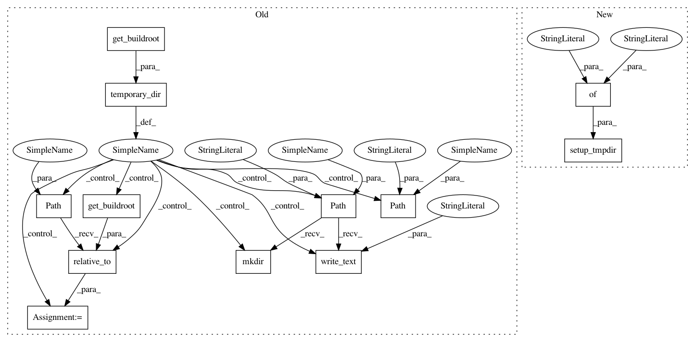

f7b260e965e277d62d2f54847671d06b1763fb21,src/python/pants/backend/python/rules/run_python_binary_integration_test.py,RunPythonBinaryIntegrationTest,test_sample_script,#RunPythonBinaryIntegrationTest#,13
Before Change
- We properly load third party requirements.
- We propagate the error code.
with temporary_dir(root_dir=get_buildroot()) as tmpdir:
tmpdir_relative = Path(tmpdir).relative_to(get_buildroot())
src_root1 = Path(tmpdir, "src_root1/project")
src_root1.mkdir(parents=True)
(src_root1 / "app.py").write_text(
dedent(
\
import sys
from utils.strutil import upper_case
if __name__ == "__main__":
print(upper_case("Hello world."))
print("Hola, mundo.", file=sys.stderr)
sys.exit(23)
)
)
(src_root1 / "BUILD").write_text("python_binary(sources=["app.py"])")
src_root2 = Path(tmpdir, "src_root2/utils")
src_root2.mkdir(parents=True)
(src_root2 / "strutil.py").write_text(
dedent(
\
After Change
- We properly load third party requirements.
- We propagate the error code.
sources = {
"src_root1/project/app.py": dedent(
\
import sys
from utils.strutil import upper_case
if __name__ == "__main__":
print(upper_case("Hello world."))
print("Hola, mundo.", file=sys.stderr)
sys.exit(23)
),
"src_root1/project/BUILD": "python_binary(sources=["app.py"])",
"src_root2/utils/strutil.py": dedent(
\
def upper_case(s):
return s.upper()
),
"src_root2/utils/BUILD": "python_library()",
}
with self.setup_tmpdir(sources) as tmpdir:
result = self.run_pants(
[
"--backend-packages=pants.backend.python",
In pattern: SUPERPATTERN
Frequency: 3
Non-data size: 12
Instances
Project Name: pantsbuild/pants
Commit Name: f7b260e965e277d62d2f54847671d06b1763fb21
Time: 2020-08-23
Author: 14852634+Eric-Arellano@users.noreply.github.com
File Name: src/python/pants/backend/python/rules/run_python_binary_integration_test.py
Class Name: RunPythonBinaryIntegrationTest
Method Name: test_sample_script
Project Name: pantsbuild/pants
Commit Name: f7b260e965e277d62d2f54847671d06b1763fb21
Time: 2020-08-23
Author: 14852634+Eric-Arellano@users.noreply.github.com
File Name: tests/python/pants_test/integration/build_ignore_integration_test.py
Class Name: BuildIgnoreIntegrationTest
Method Name: test_build_ignore_dependency
Project Name: pantsbuild/pants
Commit Name: f7b260e965e277d62d2f54847671d06b1763fb21
Time: 2020-08-23
Author: 14852634+Eric-Arellano@users.noreply.github.com
File Name: src/python/pants/backend/python/rules/run_python_binary_integration_test.py
Class Name: RunPythonBinaryIntegrationTest
Method Name: test_sample_script
Project Name: pantsbuild/pants
Commit Name: f7b260e965e277d62d2f54847671d06b1763fb21
Time: 2020-08-23
Author: 14852634+Eric-Arellano@users.noreply.github.com
File Name: tests/python/pants_test/integration/build_ignore_integration_test.py
Class Name: BuildIgnoreIntegrationTest
Method Name: test_build_ignore_list